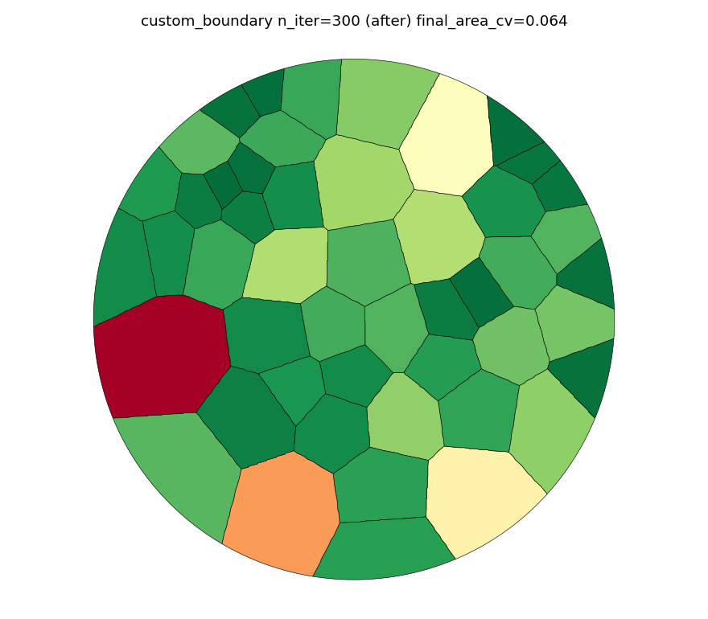
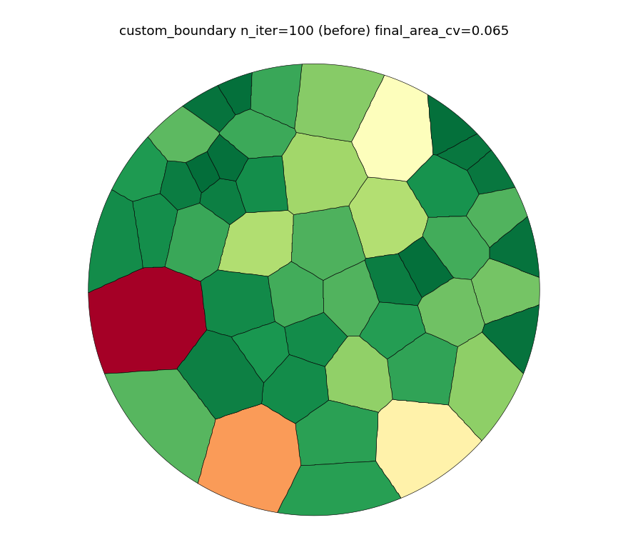
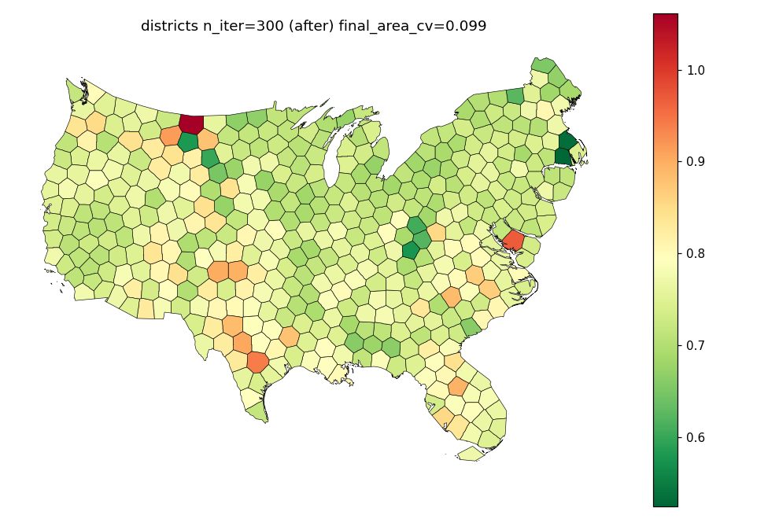
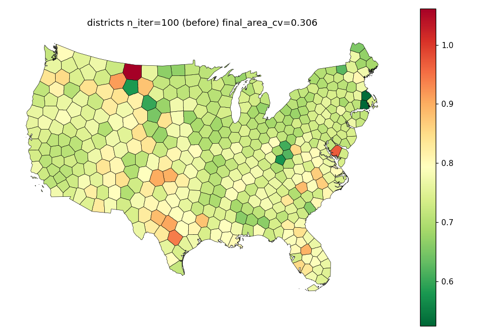

>
See fastmath_findings.md for the full writeup. Short version:
det_harness.py in this directory.densified to 391,644 coords - bracketing the reported 364,086-coord repro), at n_iter 60/100/500. **Zero divergence in any run** - every run's coordinate checksum was bit-identical to every other run of the same configuration.
flow_cartogram/displacement.py:88,geo_utils/geometry.py:132) write strictly independent per-index outputs under prange; any cross-thread accumulation happens in an explicit sequential loop afterward. Neither performs a thread-shared floating-point reduction, so there is no mechanism by which parallel scheduling order (with or without fastmath) could change the result.
meant to solve, so the fix cannot be verified. No code change shipped for this piece. See fastmath_findings.md for recommended next steps if a human wants to re-open this on the original repro environment.
fastmath_repro_districts_n100.txt (districts, n_iter=100,20 runs), fastmath_repro_states_n500.txt (states densified to 391,644 coords, n_iter=500, 5 runs).
n_iter raised 100->300 (30->300 in choose-backend.ipynb) in:
docs/examples/voronoi_cartogram/plot_voronoi_districts.pydocs/examples/voronoi_cartogram/plot_voronoi_custom_boundary.pydocs/examples/voronoi_cartogram/plot_voronoi_elastic_boundary.pydocs/how-to/voronoi_cartogram/choose-backend.ipynbarea_cv_tol self-stops each script early once converged, so cost is well below the full 300 iterations in every case that has a tolerance set.
| n_iter | iterations used | final area_cv | mean area error | wall time |
|---|---|---|---|---|
| 100 (before) | 100 (did not converge) | 0.306 | 26% | baseline |
| 300 (after) | 176 (self-stopped) | 0.099 | 8.1% | +12s |
 
| n_iter | final area_cv | wall time |
|---|---|---|
| 100 (before) | 0.0647 | baseline |
| 300 (after) | 0.0639 | +1.6s |
Already close to area_cv_tol at n_iter=100, so the visual/metric change here is small - included for completeness.
 
Measured directly (not full mkdocs build):
| variant | n_iter=100 final area_cv | n_iter=300 final area_cv | added wall time |
|---|---|---|---|
| fixed boundary | 0.1946 | 0.1677 | +1.7s |
| elastic boundary | 0.0473 (already converged) | 0.0473 | ~0s |
The fixed-boundary variant does not reach area_cv_tol=0.05 even at n_iter=300 - expected, since the whole point of the example is to show that a fixed boundary converges worse than an elastic one at the periphery.
No area_cv_tol, so these always run the full n_iter:
| backend | n_iter=30 | n_iter=300 | added wall time |
|---|---|---|---|
| Raster | 1.2s, cv=0.0772 | 3.2s, cv=0.0246 | +2.0s |
| Exact | 1.6s, cv=0.3866 | 14.5s, cv=0.1288 | +12.9s |
Total added cost for this notebook: ~+15s. ExactBackend still doesn't reach a tight cv even at n_iter=300 (0.1288) - matches the notebook's own narrative that ExactBackend "converges slowly," so this is expected and not a problem to fix here.
uv run mkdocs build -s (the check-docs CI job) passes locally with all of the above changes applied. See the docs-build-flake note below for an unrelated, pre-existing intermittent failure encountered while verifying this.
prepare_layout_data (src/carto_flow/symbol_cartogram/layouts/data_prep.py) computes mean_area/unit_cell_radius from the original geometries (step 1) before pre_scale rescales connected components (step 4b). geometry_areas used for size_normalization="total" is recomputed after prescaling, but mean_area (returned on LayoutData) and unit_cell_radius (used for size_normalization="max", the *default*) are not - so pre_scale silently has no effect on non-mosaic layout sizing under the default settings.
**Decision: documented, not reordered.** Reordering changes non-mosaic layout output and needs its own measurement/decision per the standing rules; documenting is the safe, non-behavior-changing option. Added TestPreScale.test_pre_scale_does_not_change_mean_area_or_max_normalized_sizes in tests/test_symbol_cartogram_mosaic.py pinning the current, documented behavior so a future reordering change is a deliberate, visible diff.
Dropped cells calling geographic_grouped_cartogram / .placement_metrics (exploratory, disconnected from the guide's tile_count/group_by narrative) and a trailing empty cell.
Reproduced on a clean mkdocs build -s:
`` File ".../mkdocs_gallery/gen_gallery.py", line 633, in _sec_to_readable t = datetime(1, 1, 1) + timedelta(seconds=t) OverflowError: date value out of range ``
Re-ran the identical build immediately after (same code, same machine) and it succeeded - confirmed intermittent, not a deterministic failure tied to our changes. _sec_to_readable is upstream mkdocs-gallery==0.10.4 code (gen_gallery.py:627-635); most likely a rare negative or otherwise malformed exec_time for one script pushes the timedelta below datetime.min. Fixing it would require patching third-party site-packages, which is invasive and not durable across dependency updates - reporting per the standing rule rather than working around it. No code change made for this item; flagging for a human to consider reporting upstream or pinning a version if/when one fixes it.
Documented on FlowDensityLayoutOptions (src/carto_flow/symbol_cartogram/layouts/flow/__init__.py) and in docs/explanations/symbol-cartogram-flow-density-layout.md:
cross_group_pull_scale=0 removes cross-group *pull* but does notisolate groups - the density field is built from all pairs together and covers the full domain, so groups still interact through push forces and shared field geometry.
convergence_tolerance is checked against the *mean* relative NNspacing error across all pairs, not a per-pair bound, so individual pairs (including some residual overlap) can remain above tolerance when the layout reports convergence.
make check (pre-commit/ruff/mypy/deptry, lock check): cleanuv run pytest -q: 487 passeduv run mkdocs build -s: succeeds (see flake note above)git log --oneline -1 on the branch equals thecommit referenced above; PR #37 opened against main.

voronoi_custom_boundary_after.png

voronoi_custom_boundary_before.png

voronoi_districts_after.png

voronoi_districts_before.png